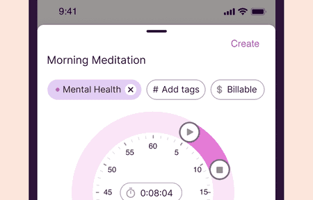
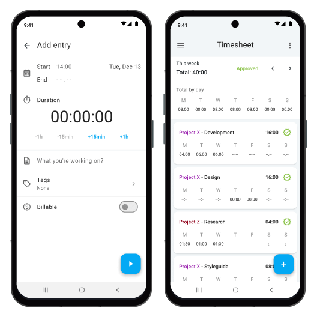
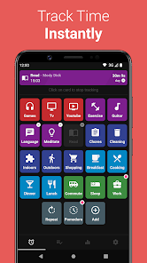

Design Research: WorkLedger Mobile Time Tracking
TL;DR
WorkLedger의 첫 화면은 기능 목록이 아니라 “지금 출근 중인가?”를 1초 안에 판단하게 하는 상태 중심 화면이어야 한다. 경쟁 앱은 원탭 시작, 명확한 진행 상태, 수동 보정, 요약 리포트를 반복적으로 제공하지만, WorkLedger MVP는 회사용 근태 관리보다 개인 로컬 장부에 초점을 둬야 차별화된다.
권장 방향은 Airtable식 흰 캔버스와 진한 잉크 CTA를 기본으로 두고, 월간 요약/남은 연차 같은 핵심 정보만 시그니처 카드로 띄우는 것이다. 출퇴근 액션은 홈 화면과 지속 알림에서 동일한 언어와 상태를 유지해야 한다.
Research Limits
Lazyweb MCP 도구와 Lazyweb 전용 browse 캡처 도구가 현재 세션에 노출되어 있지 않았다. 따라서 Lazyweb 스크린샷 데이터베이스 결과는 포함하지 못했고, 공개 웹 페이지 및 공개 이미지 URL에서 확인 가능한 레퍼런스만 사용했다.
Recommendations / Next Steps
- 홈 화면을 “오늘의 상태 + 단일 주요 액션”으로 고정한다. Toggl과 Clockify는 시작 버튼을 화면의 중심 흐름에 둔다. WorkLedger는 프로젝트/고객/청구 기능이 없으므로 “출근”, “퇴근”, “수정”의 상태 전환을 더 크게 보여줄 수 있다.
- 수동 수정은 숨기지 말고 기록 신뢰성을 보강하는 보조 동선으로 둔다. Clockify의 수동 입력 화면은 시작/종료/기간을 분리해 보여준다. WorkLedger도 “오늘 기록 수정”을 별도 화면으로 분리해 실수 복구를 빠르게 해야 한다.
- 월간 요약은 차트보다 텍스트 숫자 카드가 먼저다. MVP 사용자는 분석보다 “이번 달 얼마나 일했나”, “연차가 얼마나 남았나”를 확인한다. Airtable 규칙의 시그니처 카드 언어를 월간 요약과 남은 연차 카드에 제한적으로 적용한다.
- 개인 로컬/무계정/민감정보 최소화를 명시적인 제품 차별점으로 만든다. Simple Time Tracker와 ActivityWatch 모두 privacy/local-first 메시지가 강하다. WorkLedger도 서버, 로그인, 회사명, 위치 없이 시작하는 신뢰를 UI에 반영해야 한다.
Home State Sketch
┌─────────────────────────────┐ │ 내근무장부 설정 │ ├─────────────────────────────┤ │ 오늘 · 6월 12일 금요일 │ │ │ │ ┌───────────────────────┐ │ │ │ 아직 출근 전 │ │ │ │ 기록된 근무 없음 │ │ │ └───────────────────────┘ │ │ │ │ [출근하기] │ │ │ │ 이번 달 84시간 20분 │ │ 남은 연차 7.5일 │ └─────────────────────────────┘
Running State Sketch
┌─────────────────────────────┐ │ 근무 중 │ ├─────────────────────────────┤ │ 출근 09:03 │ │ 현재 3시간 42분 기록 중 │ │ │ │ [퇴근하기] │ │ │ │ 메모 추가 오늘 수정 │ └─────────────────────────────┘
Month Summary Sketch
┌─────────────────────────────┐ │ 6월 요약 │ ├─────────────────────────────┤ │ 총 근무 168시간 10분 │ │ 근무일 21일 │ │ 평균 출근 09:08 │ │ │ │ ┌───────────┐ ┌───────────┐ │ │ │ 남은 연차 │ │ 가격 보기 │ │ │ │ 7.5일 │ │ 클릭 측정 │ │ │ └───────────┘ └───────────┘ │ └─────────────────────────────┘
Key Examples



Patterns
| 패턴 | 관찰 | WorkLedger 적용 |
|---|---|---|
| 원탭 시작 | Toggl, Clockify, Simple Time Tracker 모두 기록 시작 동선을 크게 둔다. | 홈과 지속 알림에서 동일한 “출근하기/퇴근하기” 동사를 사용한다. |
| 현재 상태 우선 | 타이머 앱은 기록 중인지, 몇 시간이 지났는지를 즉시 보여준다. | 오늘 카드에 현재 상태, 출근 시각, 누적 시간을 먼저 배치한다. |
| 수동 보정 | Clockify는 Add entry에서 시작/종료/기간을 분리해 수정 가능하게 한다. | 실수 복구용 “오늘 기록 수정”을 2차 액션으로 유지한다. |
| 요약 리포트 | Clockify와 Toggl은 일/주/프로젝트 단위 집계를 제공한다. | MVP는 프로젝트 분석 대신 월 총 근무시간, 근무일, 남은 연차만 제공한다. |
| 로컬/프라이버시 | Simple Time Tracker와 ActivityWatch는 오픈소스, 로컬, 무계정 메시지를 강조한다. | 로그인 없는 시작과 민감정보 미수집을 온보딩/설정에서 짧게 보여준다. |
Anti-Patterns
- 팀 관리 기능을 MVP 홈에 노출하지 않는다. Clockify/Connecteam류의 승인, 위치, 급여, 팀 기능은 WorkLedger의 MVP 범위 밖이다.
- GPS, 회사명, 급여 정확성 보장을 암시하지 않는다. 프로젝트 지침상 위치, 회사 시스템 연동, 법적/급여 정확성 보장은 명시적으로 제외되어 있다.
- 차트부터 보여주지 않는다. 월간 차트는 보기 좋아도 10초 기록 목표에는 방해가 된다. 먼저 숫자 요약, 이후 상세 화면이 맞다.
- 활동 그리드로 복잡도를 만들지 않는다. Simple Time Tracker식 다중 활동 시작 UI는 개인 시간 추적에는 좋지만 출퇴근 기록 앱에는 과밀하다.
Unique Angles
Persistent Notification As Primary Surface
Clockify는 Android 앱 설명에서 실행 중인 타이머를 알림에서 관리할 수 있음을 강조한다. WorkLedger는 홈 화면보다 알림 액션이 더 자주 쓰일 수 있으므로, 알림 문구와 홈 상태 문구를 같은 상태 머신으로 설계해야 한다.
Leave Balance As Manual Ledger
경쟁 앱은 time off를 팀/승인 기능의 일부로 다루는 경우가 많다. WorkLedger는 자동 법정 연차 계산을 하지 않는 대신, 사용자가 직접 입력한 총 연차와 사용 연차를 조용히 추적하는 “개인 장부” 포지션을 잡을 수 있다.
Airtable-Inspired Editorial Calm
저장한 Airtable 설계 규칙은 흰 캔버스, 진한 잉크 CTA, 절제된 시그니처 카드가 핵심이다. WorkLedger에서는 출퇴근 CTA를 진한 잉크 버튼으로, 월간 요약/연차 카드만 코럴·포레스트 계열 표면으로 제한하면 과한 SaaS 느낌 없이 집중감이 생긴다.
Findings
시간 추적 앱의 좋은 첫 화면은 “입력 폼”보다 “상태판”에 가깝다. 사용자는 매번 세부 정보를 입력하고 싶어 하지 않고, 지금 기록 중인지와 다음에 누를 버튼만 확인한다. 이 점은 Toggl의 원탭 기록, Clockify의 타이머/타임시트 분리, Simple Time Tracker의 빠른 활동 시작에서 반복된다.
WorkLedger의 차별점은 팀 관리가 아니라 개인 근무 증빙에 가까운 로컬 장부다. 따라서 MVP는 기능 폭을 넓히기보다 상태 전환, 실수 수정, 월간 요약, 수동 연차 잔여량을 높은 신뢰도로 제공해야 한다. 디자인 시스템도 같은 원칙을 따라 조용하고 명확해야 한다.